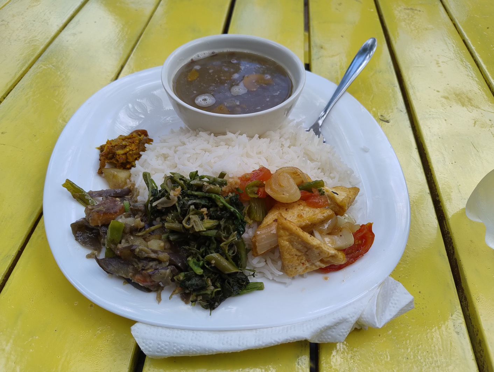
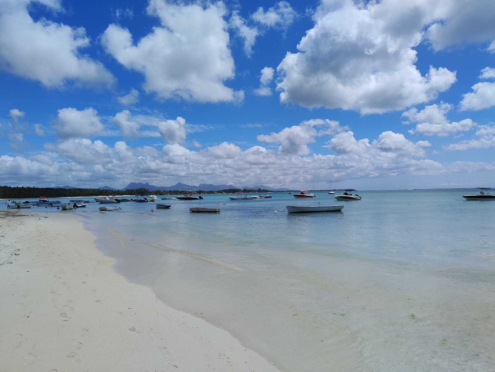
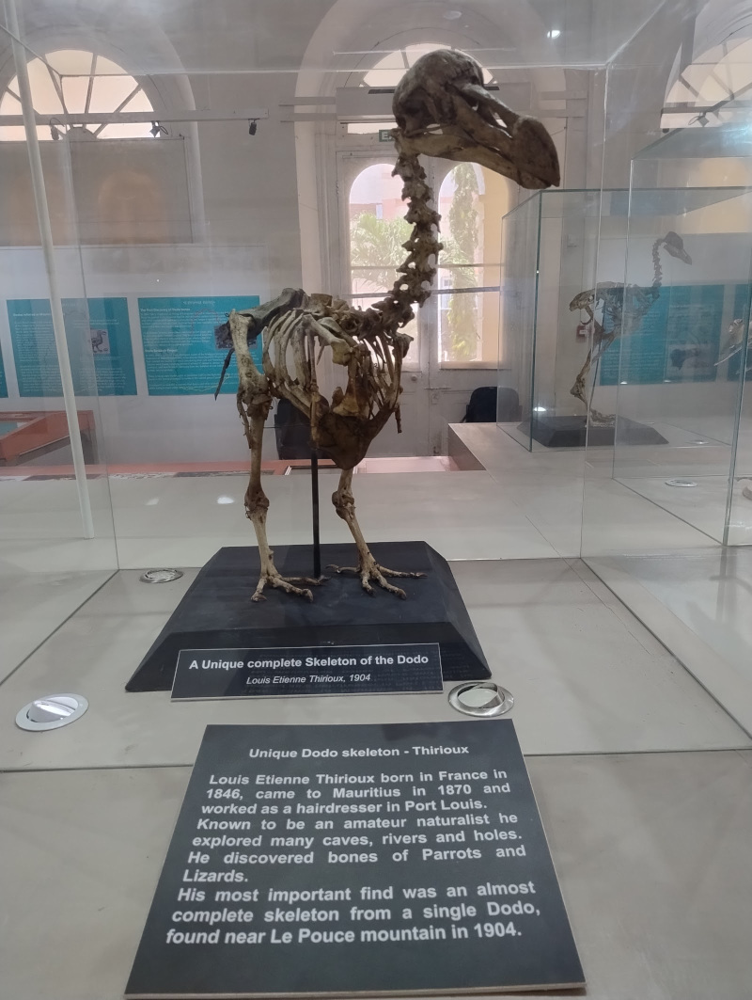
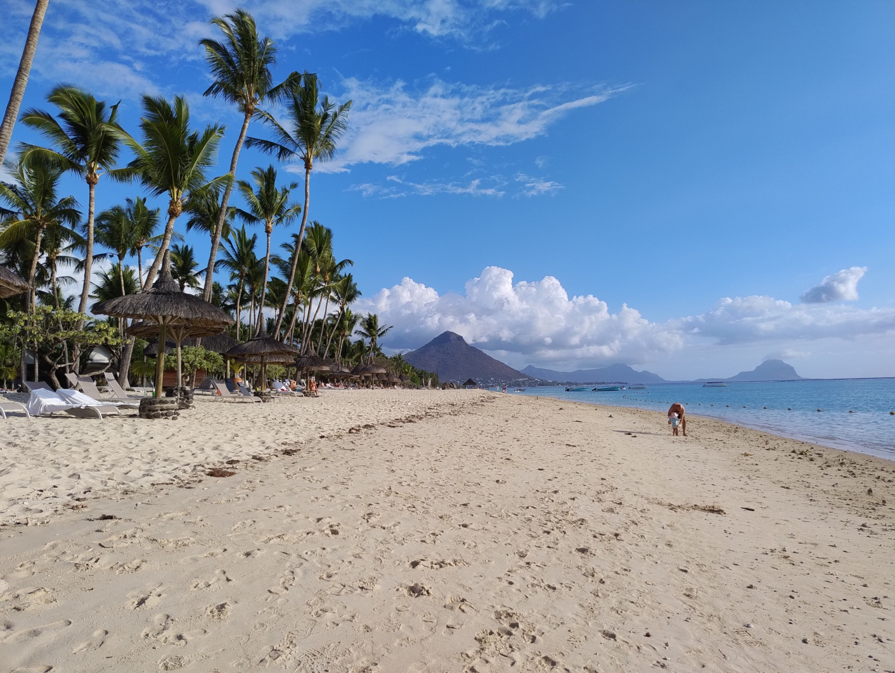
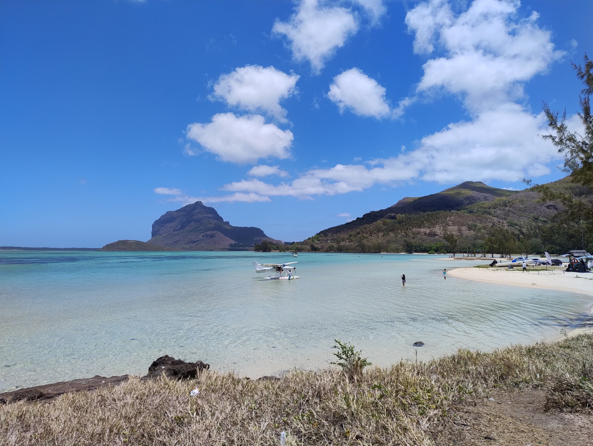
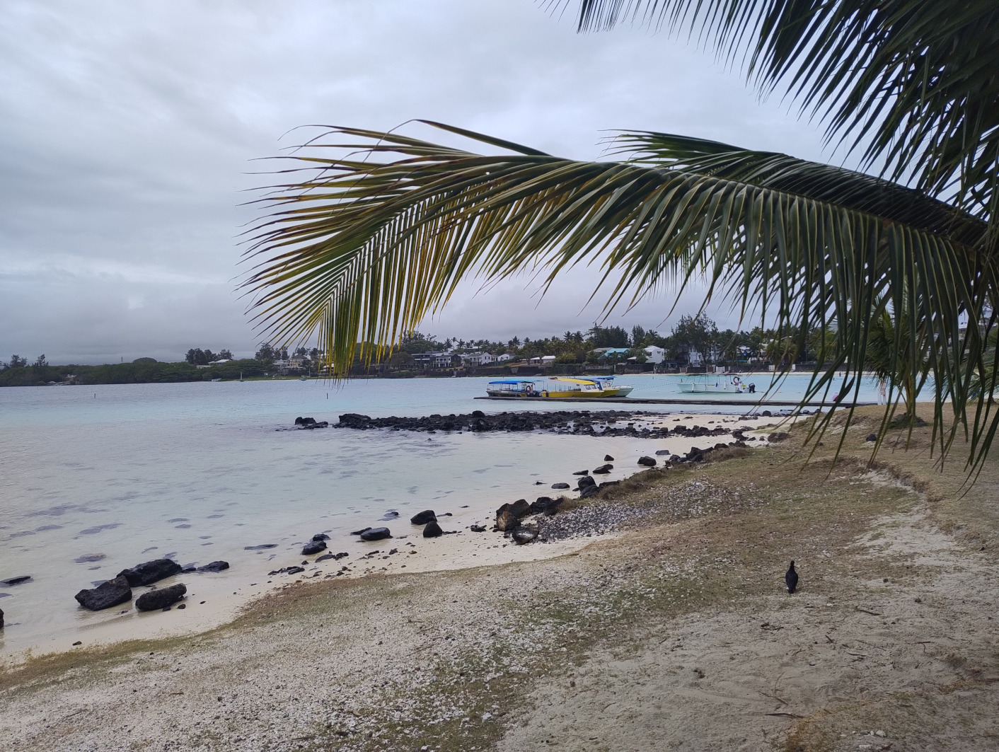
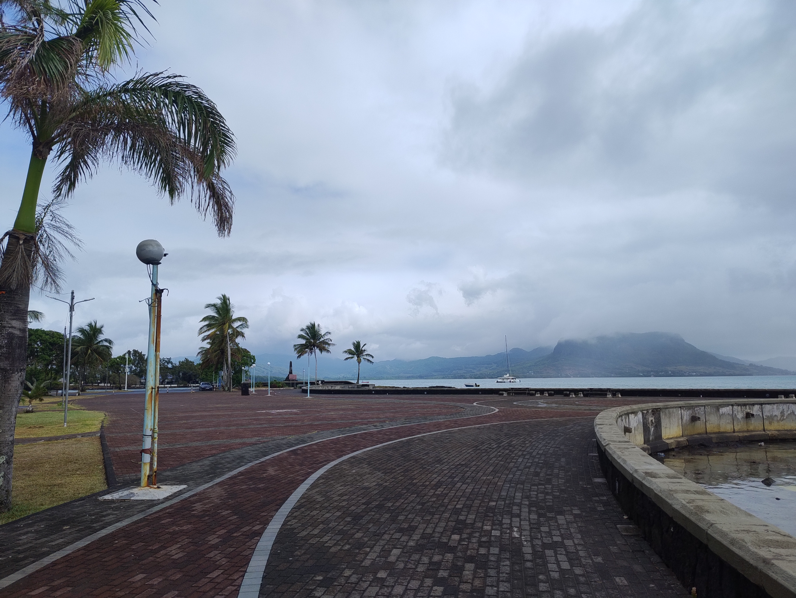

Mauritius 2024
Mauritius is a small island nation in the Indian Ocean to the east of Madagascar.
This is mainly a beach destination.
Impressions
The beaches are beautiful. It seems to be very developed, westernised. People are friendly, but do not bother you. There are no touts. I haven't been hassled much, only a couple of people begging when I went to the city.
Eating
The food seems to be a mixture of western foods and Asian foods. There are supermarkets around and they are normally very modern. They sell nice foods and one that was near me had some local foods you could buy from the deli counter.
Street food is available, but seems to be around mainly in cities and towns. The places I visited were clean. They are like kiosks and serve local foods such as Roti with vegetables/different fillings. I also had a curry from a street vendor in the capital city and it was nice.
On the beach, they have these huts which serve foods. It is mainly junk food and a bit pricey, but can be okay. I had Samosas from these a couple of times.
There are restaurants that serve Creole food and western dishes.
While it has this, food and convenience stores are not ubiquitous like they are in some South East Asia countries, for example. You can end up staying somewhere remote and being a bit stuck for food in the evening and being forced to eat at restaurants. I’d advise stocking up on food and eating in your accommodation if you are on a budget.
Convenience
Stuff seems to be closed on Sundays.
Supermarkets have limited opening times.
Transport is not always easily accessible. Taxis seem to need to be booked in advance. I used an app called DoDo Go once; it was useful the first time, but other times it didn't work well. I had a taxi booked and it didn't arrive.
It was possible to hail taxis, but you have to negotiate a price.
Local buses are good, but they operate within limited hours and not much information seems available. They are quite well organised and spacious. I'd recommend them for the experience.
I used the website below which was handy:
https://www.mauritius-buses.com/
Accommodation
I used booking.com. Accommodation seems to be reasonably priced. On a low-midrange budget, I booked apartments. The quality was good, they all had decent facilities, and I was able to make my own food.
These are normally people's properties that they rent out, so you have to meet the person to collect the key. There weren't 24-hour receptions, so I had to make sure I could connect my transport so that I made it in time and stuff. The local SIM card that I bought came in very handy.
Telecoms
I brought an Entel SIM card before I went. You can buy the tourist package online for about £12. I recommend it as it came in very handy.
Locations
Mont Choisy
Mont Choisy beach is beautiful, but the water was very still.
I stayed in a neighbourhood which was a 10-minute walk away. This was in-between Mont Choisy beach and Trou Aux Biches. Both excellent beaches.
Grand Baie was near to Mont Choisy. You could walk there, but it took 1.5 hours. There were buses, but they weren't running because of the public holiday. I had to get a taxi which I shared with this French couple, it was 100 rupees each.
Port Louis
Port Louis is the capital city.
I visited Port Louis by using the public buses to get there. I didn't need to change and the journey was about 1 hour. It stops at a central bus station and then you can get the bus back from the same place. It might not make much sense though, but it is easy to do once you know.
Port Louis was better than I expected. The bit where the bus stops looks quite run down, but the city itself has some nice things.
There is a nice church, the central market is interesting, and the highlight for me was the natural history museum where you could see some Dodo skeletons. There is a modern area near the docks which has a modern shopping mall and some restaurants. Not really my thing, but it was pleasant.
Flic En Flac
Flic en Flac was the busiest place I stayed at. It has a long sandy beach and a lot of tourist attractions. This was my favourite beach because there were more waves and I like the stimulation of being in the water when it is like that.
The apartment was really nice and had a supermarket nearby. I brought all my food from there and made my own meals.
I didn't really go anywhere else when I stayed there, apart from the shopping mall nearby. I took a bus to get there and back, but you could walk from where I stayed in about one hour.
Le Morne
Le Morne is a geological feature, like a mountain, but I think it would more likely be classified as a hill. You can climb to the top, but I didn't do this because I probably would have had an accident.
I stayed on the outskirts of a village called La Gaulette. It was a little bit more rural there. I really enjoyed staying in the apartment because of the nature. From the terrace, I had a view of the sea. There were all kinds of coloured birds and I saw a parakeet once. There were huge bats swooping down. I couldn't believe it. When I looked it up, I found out that they are called the Mauritian Flying Fox and are one of the biggest in the world.
I took the number 5 bus from the main road where I was staying and this would get me to a place called La Prairie which had beautiful scenery of Le Morne. Further down there was a place called Bay du Cap which was an interesting village. I went there on a different day on the same bus.
The main beach at Le Morne is nice, but you can only realistically get there by own transport or taxi. I managed to hail a taxi by walking up the road to where the junction was, it cost 200 and 300 to get back. Probably a rip-off, but a lot less than what they are advertising online.
The beach was nice, but had a lot of high-end hotels.
La Gaulette had a shopping mall with a large supermarket. There are cafes and restaurants around so it isn't really isolated.
Blue Bay
Blue Bay was a really nice place. It's very small, but has a lot of character. The beach is very small, but really nice water.
The weather was bad because there was a cyclone which passed nearby to Mauritius. The first day was really humid with some showers. I went to Mahebourg which is a town nearby. It was surprisingly nice, with nice scenery around the seafront. I found it interesting walking around the streets through some of the neighborhoods.
There was a museum there on the different European influences in Mauritius which was interesting.
Blue Bay itself, is mainly set up for tourists, it has a few restaurants and a couple of small shops. The nearest supermarket is in Mahebourg.
The last day it rained heavily all day and it was impossible to do anything. I had snorkeling booked, but this didn't run because of the weather. I felt depressed because I was really looking forward to it. I might never get to experience that now, unless I am able to go back.
Today is the last morning before I fly home. The sunrise was beautiful this morning. I am sitting in a cafe and my taxi arrives in 1 hour and 10 minutes.